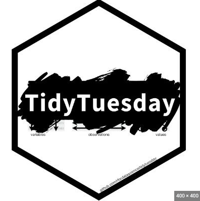

BenKowalski_Portfolio
Home
About me
Ben Kowalski’s Portfolio
Categories
All
(5)
Interactive Graphics
(1)
MLB Datatable
(1)
Presentation
(1)
R Visualization
(1)
Shiny App
(1)
Me, as a Data Scientist
Presentation
My Data Scientist Journey
Ben Kowalski
NFL Interactive Graphics
Interactive Graphics
Graphics about NFL Quarterbacks (22-23 Season)
Ben Kowalski
MLB Statcast Metrics
MLB Datatable
A table with MLB Pitcher Metrics
Ben Kowalski
The New Age of NFL Quarterbacks
Shiny App
A Visualization of the New Era of NFL QB’s
Ben Kowalski

Tidy Tuesday Visualization
R Visualization
A recreation of a TidyTuesday from March, 2021
Ben Kowalski
No matching items